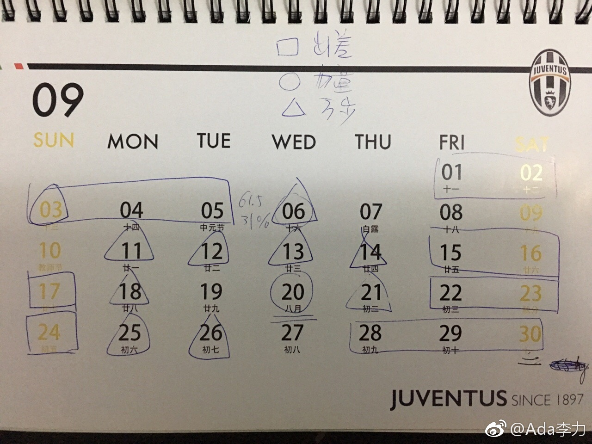

//@Francesco_yu：其实还好，比如一个月要有20天的健身任务，在没有差的日子抓紧时间做，就跟公司一般都是上半年追业绩追的比较紧，超过了后半年就轻松很多。出差住酒店就晚上弄了，早起确实不现实，至少在中国有这样的夜生活的前提下
@Ada李力:
健身不容易坚持的最大障碍是出差，九月出差及参会加起来就有12天，几乎都在周末。
健身无外乎是力量训练和有氧。
力量训练只能利用早起后的时间，可是一旦晚睡，早起就保证不了。
有氧运动还是选择快走。每日万步的计划只要上下班都步行就能达到。障碍是如果有正式的商务会谈，运动鞋很难搭配衣服。
说到底，还是时间不够，比健身优先级更高的事情是睡觉。
健身无外乎是力量训练和有氧。
力量训练只能利用早起后的时间，可是一旦晚睡，早起就保证不了。
有氧运动还是选择快走。每日万步的计划只要上下班都步行就能达到。障碍是如果有正式的商务会谈，运动鞋很难搭配衣服。
说到底，还是时间不够，比健身优先级更高的事情是睡觉。
- 